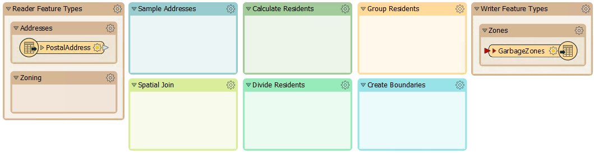
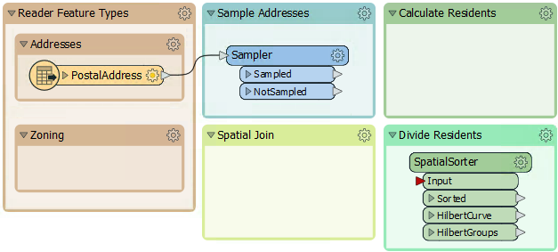
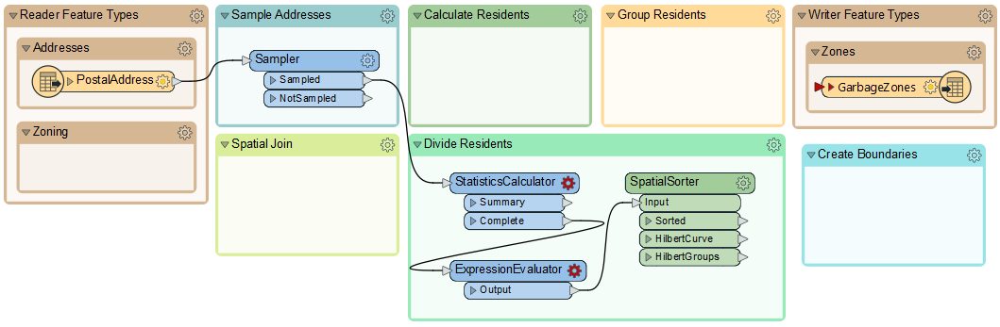
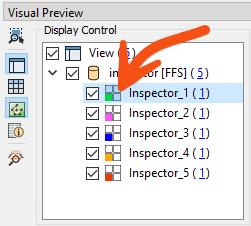

After completing this lesson, you’ll be able to:
The city maintenance department has a dataset of garbage collection schedules to assign residents to a collection on a particular day:
However, because of shifting demographics and zoning changes, they have decided that new boundaries should be drawn.
Your task is to use FME to create new boundaries. You must create five polygons adjacent to each other and with approximately the same number of residents. The analysis will be based on the city's address database. An estimate of the number of residents per address will be created depending on the zone type it falls within:
The output format will be OGC GeoPackage.
To develop this workspace, it's necessary to consider what different steps might be required. We can then create sections with a bookmark and fill them in as we go along.
1) Plan Workspace
Let's plan this workspace together.
We must read the address data (or a sample) and write the output to OGC GeoPackage. We need to know what zone type each address falls inside, which needs zoning data and a transformer to carry out a spatial join.
We must also create a resident count based on the zone type and divide the residents into five different areas. Finally, we must group the addresses with a boundary shape around them.
In short, we need this set of actions:
So, open the starting workspace in FME Workbench (2023.1 or later). It already has a set of bookmarks to represent these steps to be carried out, but, as yet, we can't be sure which sections will be larger, so all bookmarks are the same size:

You'll also find a bookmark containing all of the transformers required for the exercise:

These transformers are already configured. Because we are focusing on planning a workspace, we will not concern ourselves with the details of how these transformers function. If you'd like to learn more about the workspace, you can complete the optional lesson at the end of this course.
The SpatialSorter included in this workspace will not work with FME 2024.0 or later. Please see the most up-to-date version of this course if you are using a newer version of FME.
2) Sample Source Data
There are more features in the address database than we need for workspace construction and testing, so let's reduce that to a smaller sample.
Rather than create a test dataset, here we'll use a Sampler transformer. There is a Sampler transformer in the "Transformers" bookmark, so move that transformer into the "Sample Addresses" bookmark and connect the PostalAddress feature type to it:

Inspect the Sampler's parameters. It will sample every 25th feature:

Run the workspace to be sure it is sampling the data correctly. Click on the magnifying glass on the Sampler's Sampled output port to view the data in the Visual Preview window. Note how many features come from the Sampler's Sampled port; you will need this number to answer the quiz.
3) Divide Data into Groups
Before trying to add the Zoning dataset into the workspace, let's try and create groups from the address dataset. We can do this with a custom transformer from the FME Hub called the SpatialSorter.
So move the SpatialSorter from the "Transformers" bookmark to the "Divide Residents" bookmark:

The SpatialSorter sorts data spatially (so features closer geographically become closer in the sorted output) and creates groups.
The group parameter requires an attribute to determine the number of features in each group (group size), not the number of groups. Therefore, we'll need to calculate how many addresses there are when split into five groups.
4) Calculate Group Sizes
To calculate the number of addresses per group, we need the number of addresses and then divide that by five. We can do this with a combination of StatisticsCalculator and ExpressionEvaluator.
So, enlarge the Divide Residents bookmark as required and move the StatisticsCalculator and ExpressionEvaluator transformers from the "Transformers" bookmark. Connect them up to the Sampler's Sampled port like so:

Run the translation and view the ExpressionEvaluator output in the Visual Preview window to confirm that this part works. The TotalResidents should be 543, and the GroupSize should be 109 for each feature.
5) Group Residents
Now, the SpatialSorter is receiving the GroupSize attribute so that it will work properly.
To create groups of addresses, move the Aggregator transformer to the "Group Residents" bookmark and connect it to the SpatialSorter's Sorted output port:

The Aggregator uses Group By on GroupID from the SpatialSorter to create multi-point geometries (aggregates) from the incoming points, with one multi-point feature per group.
6) Inspect Groups
Using an Inspector transformer, we can view the data with different colors for each group in the Visual Preview window.
Connect an Inspector to the Aggregator's Aggregate output port, and then in the parameters, set the Group By to GroupID.
Run the translation, and you should find there are five sets of point aggregates in the output, each of which has approximately the same number of point features:

You can change the color of the groups by clicking on the Toggle Display Control button on the left-hand side of Visual Preview. Then, double-click on the quadrant/four-square icon to open the Geometry Drawing Styles dialog, where you can set the color. When the color is manually set, the quadrant icon will display the color.

7) Save Workspace
Save the workspace, including a date or version number (like GarbageCollection-2023-05-18.fmw).
In this exercise, you learned to sample your data, plan your workspace in sections, and work on each section one at a time. The next step in the workspace will be to add in the Zoning data, create a spatial join, and calculate how many residents live in each property based on each address's zoning type.